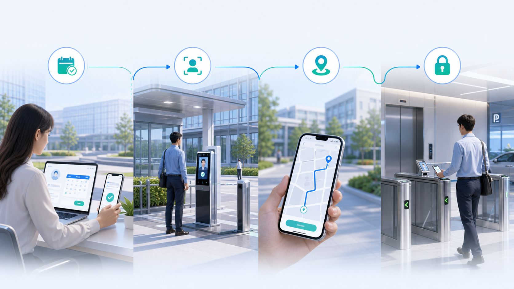

重点岗位到岗识别
围绕门岗、消控室、危化仓、装卸区等重点岗位，比对排班、门禁和视频确认到岗状态。
应用模块 03 · 人员与通行管理类
面向厂区、产业园、封闭园区和监管园区，把门禁、访客、视频、办公流程和物业服务联动起来，作为物业服务中心下的人员与通行管理能力，支撑考勤合规、访客预约、区域权限和异常滞留提醒。
08:31 危化仓值守岗位已完成到岗识别，班次状态正常。
10:12 外协访客完成身份核验，已下发到访路线与区域权限。
11:05 禁烟区疑似抽烟行为触发提醒，已联动物业与安保复核。
人员考勤与行为合规
适合厂区、产业园、封闭园区、监管园区等场景，复用视频分析能力，对到岗、离岗、串岗、PPE 穿戴、禁烟区抽烟和危险区域违规进入进行自动识别。
围绕门岗、消控室、危化仓、装卸区等重点岗位，比对排班、门禁和视频确认到岗状态。
识别值守岗位长时间空岗、人员跨区域活动、未经授权进入生产或监管区域等行为。
在施工区、生产区、实验室和禁烟区识别安全帽、反光衣、防护服和抽烟等合规风险。
访客与通行智能管理
结合门禁、访客、视频和办公流程，访客从预约到离园都可被授权、引导、提醒和追踪，减少前台、岗亭和物业客服的重复确认。
把办公审批、入口核验、门禁梯控、停车权限和视频轨迹串成连续服务，物业、被访人、岗亭和安保各自接收需要处理的节点。

由被访人或物业发起预约，自动补齐到访事由、时间、车辆和同行人员。
在入口完成证件、人脸、预约信息和黑名单比对，异常自动转人工复核。
根据预约对象和停车位置推送通行路径，减少访客在园区内无序流动。
按预约时间和到访范围下发门禁、梯控和停车权限，到期自动失效。
访客超过预约时段仍未离开时，联动被访人、物业前台和安保岗亭提醒。
对黑名单、重点关注人员和证件异常人员进行入口拦截与人工核验。
限定楼栋、楼层、房间和重点区域权限，支持临时授权与到期回收。
视频轨迹与异常复盘
针对访客超时滞留、越权进入、异常徘徊等行为，联动门禁、访客、视频和岗位规则，完成事前授权、事中识别、事后复盘。
按访客、时间、门禁点位和视频点位回放到访路径，辅助事后核查。
对机房、仓储、生产、实验室等重点区域设置停留阈值和异常规则。
复用人员识别、行为识别、区域越界、异常停留等算法能力，快速扩展物业场景。